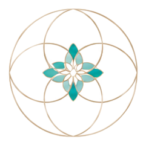
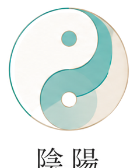
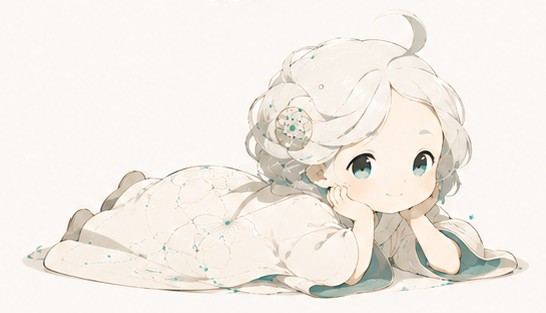
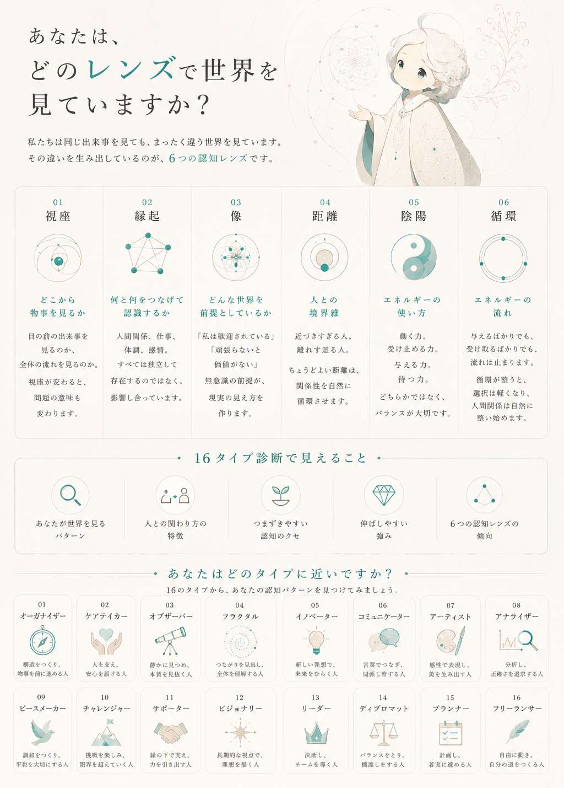
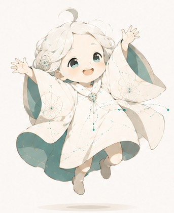

視座と重心
重心は心のトリガーを引きやすく傾いています。「頼れる親でいなければ」という信念（＝心に刻まれた前提）が、それができないシーンに遭遇すると罪悪感を生みます。


赤枠の01 視座・03 像・05 陰陽・06 循環が最も傾いており、無地の02 縁起・04 距離は中程度の傾きです。他者側の知覚（相手の重心・崩れを検知する力）は精密に機能する一方、自分を主語にした受け取り（誘いに乗る・頼る・休む）には生理的な警報が働いて動けなくなる——この非対称が01視座を赤枠へ押し上げています。表に立つ役割（講師・経営・デザイン・保育）を担う分、崩れや傾きが人目に触れることそのものへの抵抗が、03像の固着に重なっています。
自認と実測のズレ
黄＝自認（04 フラクタル・05 イノベーター）、赤＝実測の固着パターン（11 サポーター・13 リーダー）です。自認と実測の間に乖離があることが視覚的に見えます。人前に立つ役割（講師・経営）ではリーダー／サポーターとして機能し切るため、フラクタル／イノベーターという自認の「一緒に遊ぶ・共創する」感覚とは、実際の役割行動がずれています。
土台となる欲求階層と、power／forceの混入構造
考える力 — 各層とforce混入層の対応

土台（安全欲求）そのものは崩れていない。ただし表に立つ役割（講師・経営・デザイン・保育）は、頼られる・任される・誘われるという対人責任の場面密度が高い。この瞬間だけforceが混入する仕組みと、それをどう「受け取り」に変えていくかは、下のtuningで扱う。
認知の基底OSと社会的実装
自分がそうだと思っている面（自認）と、実際に人を引き寄せている面（引き寄せ）は、同じ場所にあるとは限りません。表に立つ立場のため自認優位で人物印象が先行しやすい一方、実際の引き寄せは「支え続けてくれる人」という実測優位に寄っており、両者はマッチしていません。関係循環が起こりにくい状態になっています。自認は04フラクタル・05イノベーターで、本人の感覚では循環・共創が起きているつもりですが、土台がforce駆動（脅威回避・欠乏動因）に寄っているため、行動の起点は「受け取る」ではなく「与えて場を鎮める」になっています。結果として06循環の固着（自分発の流れは進むが、誘われた流れは停止）が示す通り、実際の流れは一方通行のままです。


「受け取り」が効くポイント — force混入は一時的なもの
基底＝power駆動。頼られる・任される・誘われる、いずれかの対人責任が発生した瞬間だけforceへ一時的に振れ、収まればpowerへ戻る。L1〜L3は常時稼働、L4以降は対人責任のかかり方に応じて機能の出方が変わる、というところまでが実測ベース。
確定しているのは「対人責任のトリガーに応じてforceが混入する」という構造のみ。混入の強さ・持続時間・回復にかかる時間、および基準値理論との接続は未検証。